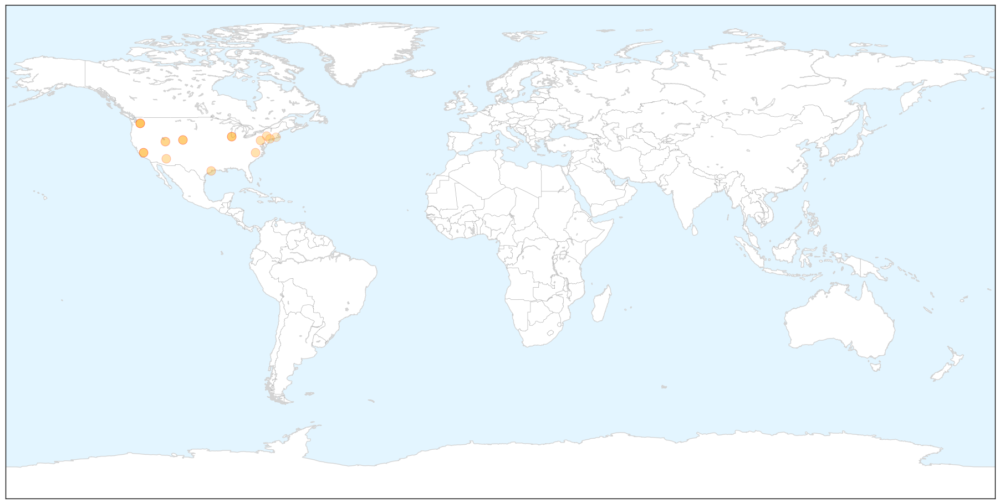
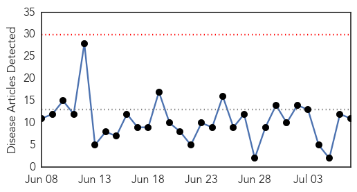
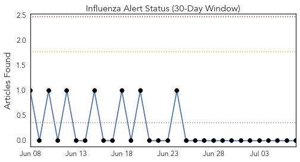
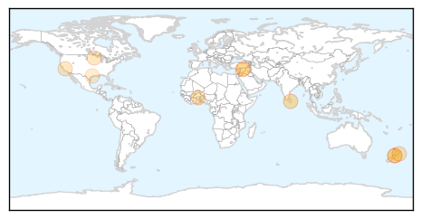
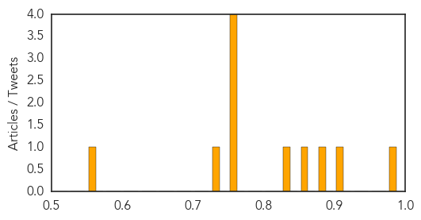

West Nile Virus
30-Day Web Trend
2 alerts, 0 warnings

30-Day Twitter Trend
0 alerts, 0 warnings

Article Locations

X

Article Confidences

Top Articles:
- 0.999
- West Nile virus in more California counties this season
- 0.994
- First Confirmed Case of West Nile Virus in Maricopa County
- 0.990
- West Nile virus spread faster this season than last year
- 0.989
- Mosquito control crews battle outbreak of pests in Bay Area
- 0.979
- Human trials begin for West Nile Virus vaccine
- 0.979
- West Nile virus returns to Weber County
- 0.972
- Mosquitoes Carrying the West Nile Virus Detected in Chicago Suburbs
- 0.944
- Mosquitoes Test Positive for West Nile Virus in Skokie
- 0.941
- NIH-sponsored clinical trial evaluates new investigational vaccine against West Nile Virus infection
- 0.940
- New York Residents reminded of Dangers of West Nile Virus
- 0.938
- West Nile virus found in Fort Collins
- 0.931
- West Nile virus found in Fort Collins
- 0.842
- The New York health department has disclosed that mosquitoes harvested from Selden, New York, tested positive to the West Nile virus
- 0.835
- Discovery Of West Nile Mosquitos In Area Prompts Preventative Measures
- 0.824
- Prevent Mosquito Bites
- 0.673
- Heat, rain bring influx of mosquitoes
- 0.645
- Latest batch of mosquitoes tests negative for virus
- 0.549
- Utah is headed into mosquito season; time for precautions
Top Tweets:
-
No tweets found for Jul 07, 2015
Influenza
30-Day Web Trend
0 alerts, 0 warnings

30-Day Twitter Trend
2 alerts, 0 warnings

Article Locations
Article Confidences
Top Articles:
- 0.995
- Flu Scan for Jul 06, 2015
- 0.914
- flu season?
- 0.898
- Ansun BioPharma Publishes Effects of FluDase™ on Drug Resistant Flu
- 0.852
- Record presentations to Hawke’s Bay Emergency Department
- 0.840
- Parliament calls for urgent steps to contain Avian flu
- 0.754
- US poultry industry devastated by bird flu
- 0.751
- July 6, 2015 Archives
- 0.751
- July 6, 2015 Archives
- 0.751
- July 6, 2015 Archives
- 0.735
- flu season?
- 0.573
- Sick doctors admit to spreading infections at work
Top Tweets:
-
No tweets found for Jul 07, 2015